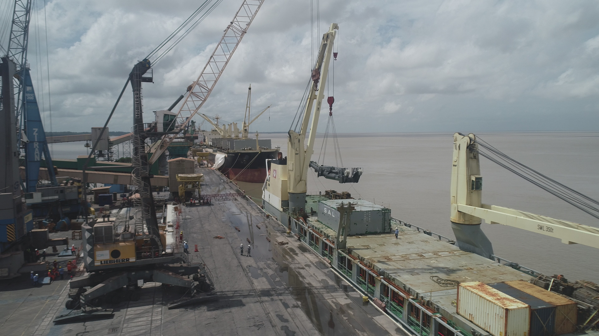
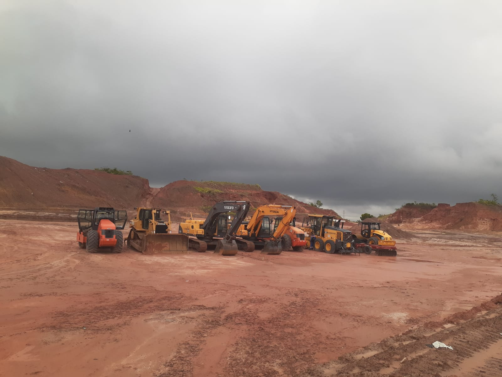
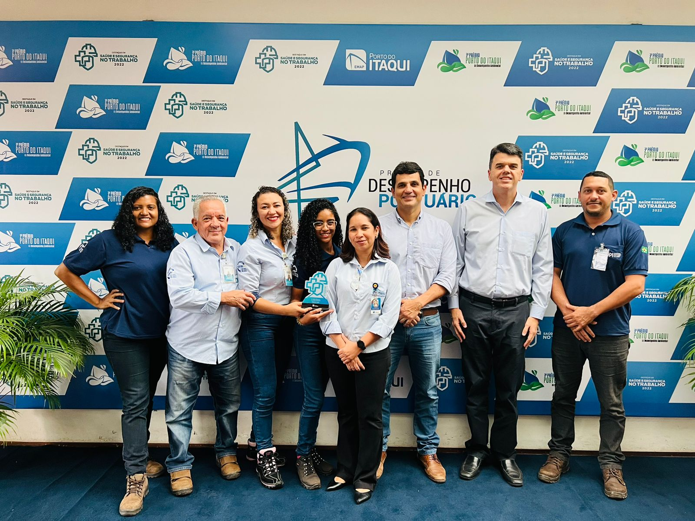

COPI investe 20 milhões em novo equipamento de alta capacidade para as operações.

A COPI recebeu no dia 20 de fevereiro deste
ano seu terceiro Guindaste Móvel Portuário. O
equipamento da fabricante alemã Liebherr,
modelo 420, com capacidade nominal superior a
1.100 t/h, já se encontra em montagem e estará
à disposição do mercado a partir da segunda
quinzena de março, tornando-se o mais moderno
guindaste em operação no Porto do Itaqui.
Com este investimento, a COPI agregará maior eficiência,
produtividade e tecnologia no atendimento ao mercado de
fertilizantes e outros graneis de importação.
Iniciadas as obras de expansão da filial na Vila Maranhão – São Luis

COPI investe na ampliação de armazenamento na Vila Maranhão
O novo projeto já em andamento da Companhia tem como objetivo ampliar a área de armazenamento fora do porto do Itaqui, mais que dobrando a capacidade de armazenagem atual.
As obras em andamento dotarão a retroárea COPI de um pátio em CBUQ com extensão de aproximadamente 30.000 m², nesse pátio se instalarão 5 unidades de galpões vinílicos com dimensões de 110 x 30 m, para acomodação do fertilizante. A estrutura como um todo conta ainda com duas balanças rodoviária em operação.
As obras estão em fase de terraplanagem com previsão de conclusão em meados de abril, todo o empreendimento tem expectativa de geração de 120 empregos diretos e indiretos.
A COPI mantém os ciclos de expansão consolidado sua marca e entregando aos seus clientes e colaboradores solidez.
A COPI recebe da autoridade portuária, prêmio por boas práticas em Gestão de Saúde e Segurança no Trabalho

A COPI conquista prêmio por boas práticas em Gestão de Saúde e Segurança no Trabalho.
Em uma cerimônia que reuniu diversas empresas da comunidade portuária do Itaqui, a COPI recebeu o prêmio “Destaque Saúde e Segurança do Trabalho” na categoria Operações Portuárias. A premiação dada pela Autoridade Portuária, visa reconhecer os esforços das empresas que atuam no Itaqui em garantir a saúde e segurança dos trabalhadores portuários.
Parabéns ao nosso time de SESMT que durante todo o ano de 2022 desenvolveu ações, campanhas e procedimentos que fortaleceram um dos principais pilares das nossas operações: A SEGURANÇA.
Em 2023 o trabalho continua. #Segurança é um valor inegociável.